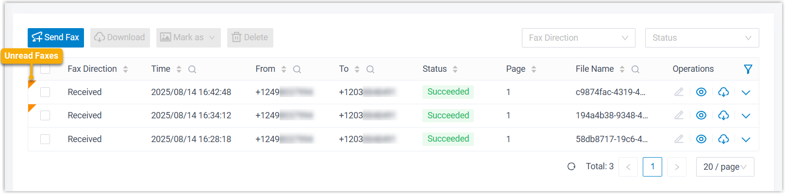
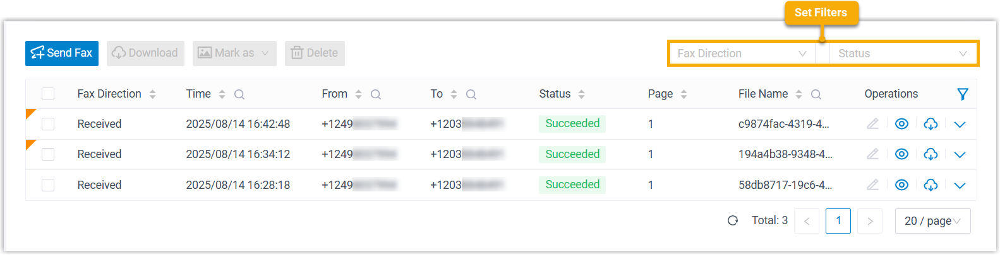
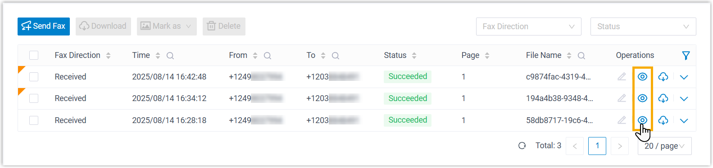

Check Faxes
All inbound and outbound faxes are organized for easy access and centralized management within Linkus Desktop Client. This topic describes how to check faxes in Linkus Desktop Client.
Requirements
System administrator has granted you the permission to receive or send faxes.
Procedure
- Log in to Linkus Desktop Client, go to .
All inbound and outbound faxes are displayed in the list, with unread ones marked by a badge.

- Optional: At the top-right corner, set filters to locate the faxes that
you want to view.

Note: To narrow down the search result, you can use the column filters in the list.Filter Description Fax Direction Select Sent or Received to filter sent or received faxes. Status Select a status to filter faxes.
Result
The matched faxes are displayed in the list.
What to do next
Manage fax logs and fax files as needed.
- Preview Fax File: Click
 to preview the fax file in a browser
tab.
to preview the fax file in a browser
tab.
When an unread fax is previewed, it will be marked as read (with the unread badge cleared), and the status change will be synchronized to your Web Client.
- Forward fax to email or another fax number
- Update read status of inbound faxes
- Download fax log and fax file
- Delete fax log and fax file